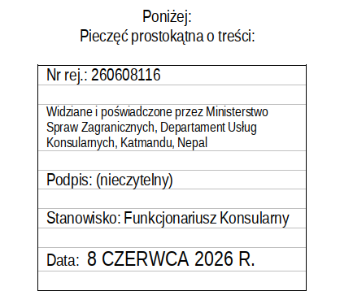
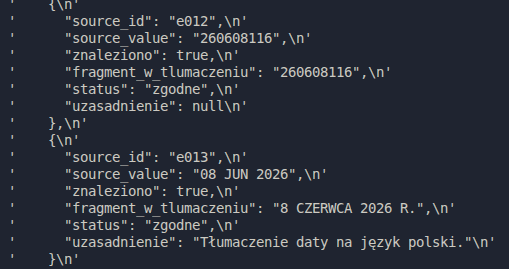
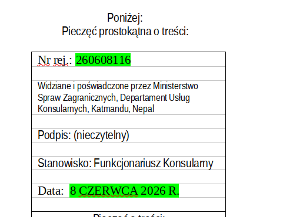

Langchain
 Langgraph
Langgraph
Langgraph
Langgraph - agentic document validation
Boring repetitive and tedious manual document values checking ? Not anymore with Langchain and Langgraph. I have created a simple agent that can read the project documentation and check if the values are correct.
Langgraph order execution :
Translated document by translator (human) :

Founded entities by LLM :

